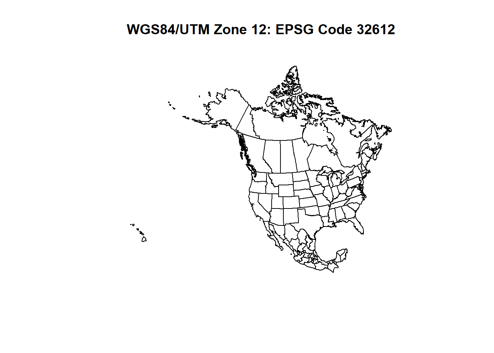

Introduction to Geospatial Science and Using Geospatial Data in R
Josh Carrell - Utah State University, MS Ecology
Last Update: May 13, 2022
D:/R Textbook Template/NR6950 Notebook/NR 6950 Notebook/images 
Geospatial Science and Analysis
The primary focus of this course is expanding our ability to obtain, organize, manipulate, analyze, and visualize spatial data. Spatial data is any data or information that is associated with a geographic location. As we start to dive into geospatial analysis, let’s revisit (or get to know for the first time!) some important terms.
GIS
GIS stands for Geographic Information System. A GIS can be any number of tools or software that allow you to obtain, organize, manipulate, analyze, and visualize spatial data rather than a single software.

GIS Software
You may be familiar with the Environmental Systems Research Institute (ESRI) and their products like ArcMap or ArcGIS Pro. ESRI produces excellent mapping products that are by far the most used and bought software among industry and academia, and they cost $$$$. However, ESRI simply was a front runner in developing software for geospatial analysis, but that certainly doesn’t mean they are the owners/creators of GIS.
We are using R as our geographic information system. It’s a free tool/language that allows us to customize code to analyze a variety of data. By learning to program, we will get to know the structure of our data on a more intimate level. It is also a very common language in natural resources and ecology. You can also use Python, QGIS, GRASS GIS, ENVI, Imagine, or any other number of systems.
It’s just important to know that GIS isn’t synonymus with any one software, it’s an idea.
It is also important to note that sometimes GIS is referred to geographic information science.
Geography
Geography isn’t just memorizing your state capitals. Geography is the study of the natural features of the earth’s surface, including topography, climate, soil, vegetation, etc, and man’s response to them.
Essentially, this class is an applied geography course. We are just using a programming language and pre-built software to analyze relationships among Earth’s features and the constructs of human perception.

Why do we always associate geography with super lame clip art and boring middle school classes… No more!
Remote Sensing
From the USGS, “Remote sensing is the process of detecting and monitoring the physical characteristics of an area by measuring its reflected and emitted radiation at a distance (typically from satellite or aircraft). Special cameras collect remotely sensed images, which help researchers”sense” things about the Earth”.
We will get into remote sensing in the upcoming weeks. Right now, it’s good to know it is simply a method used to obtain information about the earth and it’s surface (geological features, biological features, social features) through the use of imagery (very simply put).

Looking for some inspiration? Check out this gallery of excellent remotely sensed images from NASA’s Landsat satellites: https://landsat.visibleearth.nasa.gov/
Geospatial Data Types
As mentioned above, geospatial data is any data that is tied to a geographic location. The spatial information (expressed in the form of coordinates) is often combined with tabular data. Tabular data often described what is going on at those coordinates and gives identity to the spatial data.

Above is an example of tabular data with geospatial information (Latitude and Longitude) of earthquake epicenters
There are a two types of geospatial data we will be working with this semester. Vector and Raster.
Vector
Vector datasets are often described as points, lines, and polygons. They are the most common data types you will work with in geospatial analysis.

Points, lines, and polygons are all around us!
Points
Points are the most basic spatial data type you will ever work with. They consist of a set of coordinates (x,y) and have no length or width. They are simply just a location in space. There is no possibility of points overlapping which is possible with lines and polygons.
Points can be used to represent a variety of objects at varying spatial scales (scale covered below).
Some examples of what a point could represent:
Fire Hydrants
Species Occurrence Location
Oil and Gas Well
Cities
Lightning Strike Location
Campgrounds
Lines
Lines are the result of at least 2 connected points. The spatial location and dimension of a line is defined by the geographic location of those 2 points and the distance between them, which results in lines only having 1 dimension, length. Lines cannot have a width.
Lines are very common in spatial datasets and often represent the following:
Roads
Utility lines (i.e, sewage, power, etc.)
Rivers
Trails
Fault lines
Polygons
Polygons are spatial objects that have both length and width, resulting in an area. It is through the connection of lines (which come from points… It’s all connected!).
Polygons may represent:
Lakes
Political Boundaries (i.e, Countries, States, Districts, National Parks, etc.)
Habitat Designations
Anything with an area!

Raster
Raster data consists of a matrix of cells/pixels that are organized into columns and rows. The cell area size (length x width) will be consistent across all cells for that particular dataset.
Common raster data are Digital Elevation Models (DEM), Satellite Imagery, Probability Models.
The values that populate the cells of a raster data often describe what type of raster you are working with. The 2 types of raster data we work with are continuous and discrete.

Continuous
Continuous raster data has cell values that are quantitative/numerical. These values may be the values of elevation in meters, degrees of slope, or the reflectance values of the electromagnetic spectrum (Remote sensing. we will cover this in depth during week 6 and beyond).

Discrete
Discrete raster data has cell values that are categorical or thematic. In lieu of numerical values, cell values are populated with descriptive values. For example, landcover rasters contain information about what cover type occupies that cell. Instead of numbers, the cell contains types (i.e, water, agriculture, urban, forest, etc.)

Spatial Scale
“Spatial scale has traditionally been defined by cartographers as the ratio between a distance on a map to the same distance in reality” - Atkinson 2005
Scale is often be numerically defined by x:xxx. For example, if something on your map is 1000th the size of the real life object, your spatial scale is 1:10,000.
Your project will often define at which scale you are mapping. For example, if you are mapping the distribution of the Red Fox, you’ll be working at a very large scale (the Red Fox is distributed across the entire Northern Hemisphere). On the flip side, If you are mapping the flowering dandelions in your yard, your scale will be very small.
Check out this graph that gives spatial scaling identity to nautral phenomen.

Coordinate Systems
A geographic coordinate system (GCS) uses a three-dimensional spherical surface to define locations. - ESRI
“A coordinate system is a system that uses numbers or coordinates to determine the position of a point or geometric element within a geographic framework”. - (Wikipedia - that’s right!)
To expand that sentence, the Earth isn’t the exact globe shaped circle we envision it to be. It is an ellipsoid (think of the shape of a cutie mandarin orange.. its almost a sphere, just a little smashed down). 
Basically, coordinate systems are geographic frameworks (or models) that project the Earths surface differently. This means different coordinate system project the surface of the Earth differently and even use different units of measurement (Latitude/Longitude, Meters, UTMs).
There are a few components of a GCS:
Angular unit of measure
Prime Meridian
Datum (Based on a spheroid)
The truth is, you don’t need to know everything about coordinate systems. You really just need to know that each GCS projects your data a little differently, each produce some sort of bias or distoration, and how to change spatial data from one coordinate system to the other. You should add in that you should know what the general characteristics of your current GCS are.
EPSG codes
Do you know how many different CRS’ and projections there are? Thousands.
I couldn’t find the exact figure but as a reference, ESRI ArcGIS products have over 4000 imbedded in their software. That’s a lot.
What gets crazier is how long the names of each CRS are. Here is an example of the full name (also called well-known text or wkt) for World Geodetic System 1984 (a very very common Datum):
GEOGCS[“WGS 84”, DATUM[“WGS_1984”, SPHEROID[“WGS 84”,6378137,298.257223563, AUTHORITY[“EPSG”,“7030”]], AUTHORITY[“EPSG”,“6326”]], PRIMEM[“Greenwich”,0, AUTHORITY[“EPSG”,“8901”]], UNIT[“degree”,0.0174532925199433, AUTHORITY[“EPSG”,“9122”]], AUTHORITY[“EPSG”,“4326”]]
Nasty stuff.
Luckily, there are codes (4-5 numbers long) that are assigned to each CRS so we don’t need to worry about those long names. These codes are called EPSG codes. You can that information on these websites: https://spatialreference.org/ref/epsg/ or https://epsg.io/
Let’s become introduced to a few different systems and what those CRS’ look like spatially. Our example will be North America.
library(sf)
Geospatial Data in R
There are a few packages in R that a staples for geospatial analysis: sp, sf, raster, and terra.
In this class, we will use all 4 packages at some point but will place special emphasis on using sf and terra. Below is a quick description as well as the basic code for importing either a vector or raster data into R.
sp
sp stands for spatial polygons. This package has been around for a long time in the use of importing, manipulating, and exporting spatial data in R. This package focuses on vector data analysis for points, lines, and polygons. This package, although still functioning, has been replaced by the sf package.
sf
sf stands for simple features. This will be our primary package used for importing, manipulating, visualizing, and exporting spatial data. The code for loading a shapefile in this package is as follows:
library(sf)
variable <- st_read(“file pathway/shapefile.shp”)
raster
raster has long been used for working with raster data and imagery in R. While still in use, terra has been developed to replace this package (sound familiar?). The code for loading Raster in this package is as follows:
library(raster)
variable <- raster(“file pathway/raster.tif”)
terra
terra is becoming a one-stop-shop for using spatial data in R. Using the terra package, we can work with both vector and raster data (though we will primarily use sf for vector data here). terra likes to have data called by different names than the other packages listed above. When working with vector or raster data, it refers to the data as “SpatVector” or “SpatRaster”. “Spat” meaning spatial. The code for loading SpatRaster in this package is as follows:
library(terra)
variable <- rast(“file pathway/raster.tif”)
Finding Geospatial Data
Finding geospatial data is actually pretty easy. There are so many websites and online databases that allow free data downloads. Finding the right data you need can be fairly tricky depending on your project. Here are some tips:
Start with keyword searches on the web (try to avoid downloading from any websites that look “sketchy”. Use your own judgement on that..).
Search websites that are known for housing a variety of geospatial data. A few well known websites:
mapcruzin
the national map (USGS)
ESRI Open data hub
Natural Earth Data
USGS Earth Explorer
Open Street Map
Open Topography
- Check state or federal agency GIS websites ending in .gov. These agencies often have their own GIS department website with downloads.